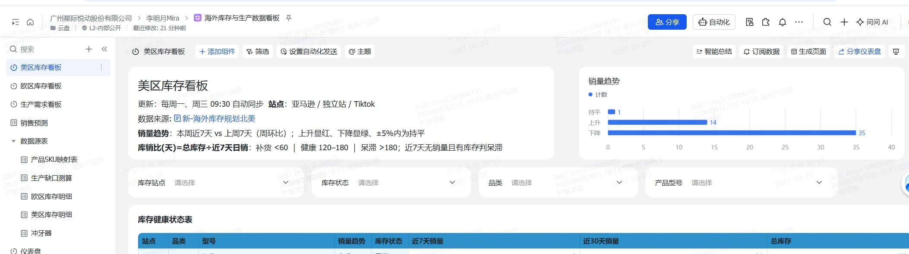

岗位定位
目标回顾
完成情况
IT 规划
团队管理
自我评价
未来计划
数据截至 2026-10-26
场景挖掘的 3 项基线全部达到
识别场景、出方案、做 PoC，三项都到了基线档
5 / 5
识别
≥
5 个场景
供应商模具周期管理
AI 辅助 3D 内容
飞书使用诊断
AI 兴趣活动 等
第 4 期汇报列到 9 个
3 / 3
≥
3 个可执行方案
GTM 三步走 MVP
3D 内容实测建议
AI 兴趣活动方案
1 / 1
≥
1 个 PoC
美区库存看板（下图）

来源：美区库存看板（PoC），双周汇报第 2 期截图；完成度取试用期目标跟踪表 9-30 版